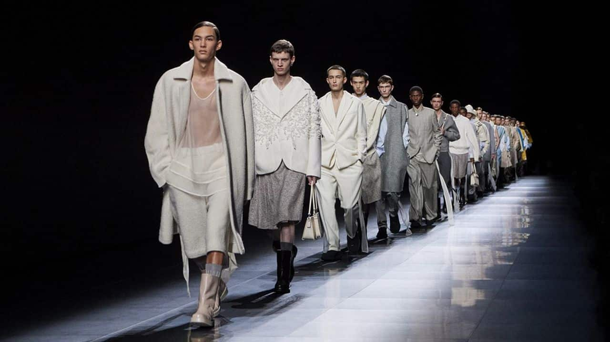
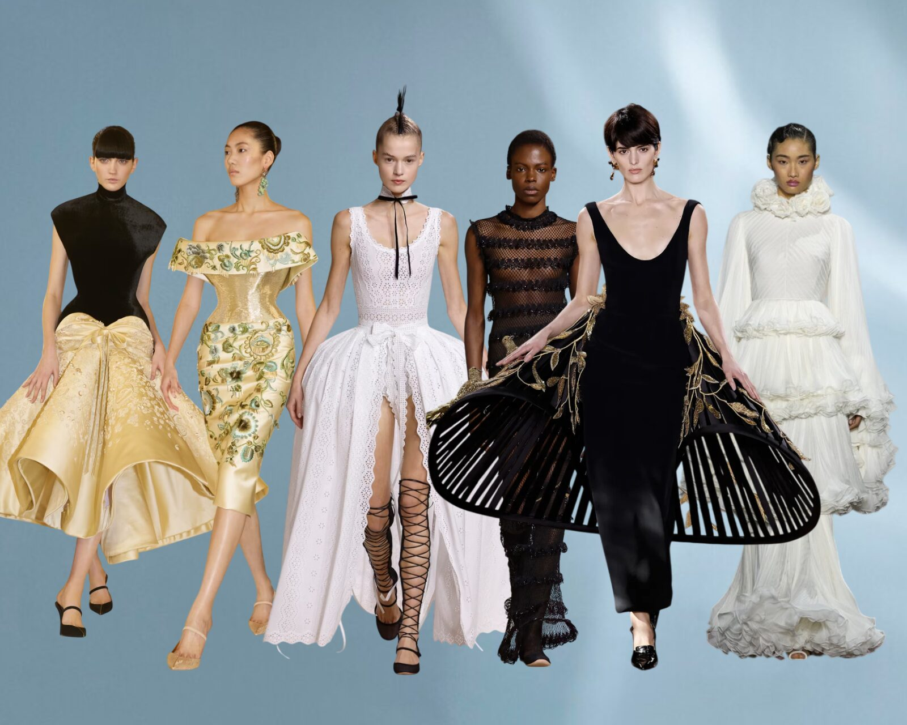

✨ Semana de la Moda en París
La Paris Fashion Week 2025 presentó colecciones innovadoras con un fuerte enfoque en prendas futuristas y tejidos inteligentes. Grandes diseñadores como Dior, Chanel y Balmain sorprendieron con piezas que combinan la tecnología con la elegancia clásica.
 